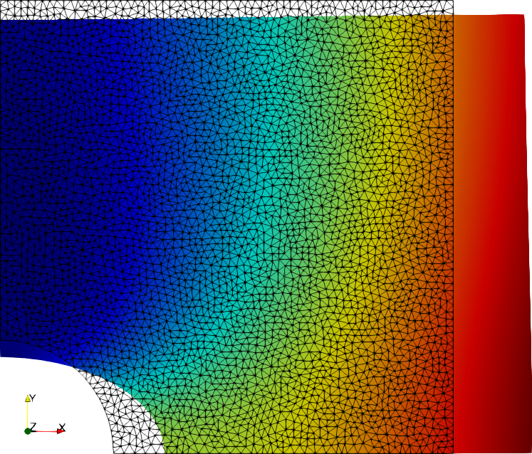

Plate with hole¶
The analytic solution to the infinite plate with hole in 2D plane stress provides a solution for the stress and the displacement field. The stress field is multiplied with the boundary normal vector \(\boldsymbol n\) and applied as traction boundary conditions. The resulting FEM displacement field is compared to the analytic displacement field.
from helper import *
import math
class PlateWithHoleSolution:
def __init__(self, E, nu, radius=1.0, L=10.0, load=10.0):
self.radius = radius
self.L = L
self.load = load
self.E = E
self.nu = nu
def polar(self, x):
r = math.hypot(x[0], x[1])
theta = math.atan2(x[1], x[0])
return r, theta
def displacement(self, x):
r, theta = self.polar(x)
a = self.radius
T = self.load
Ta_8mu = T * a / (4 * self.E / (1.0 + 1.0 * self.nu))
k = (3.0 - self.nu) / (1.0 + self.nu)
ct = math.cos(theta)
c3t = math.cos(3 * theta)
st = math.sin(theta)
s3t = math.sin(3 * theta)
fac = 2 * math.pow(a / r, 3)
ux = Ta_8mu * (
r / a * (k + 1.0) * ct + 2.0 * a / r * ((1.0 + k) * ct + c3t) - fac * c3t
)
uy = Ta_8mu * (
(r / a) * (k - 3.0) * st + 2.0 * a / r * ((1.0 - k) * st + s3t) - fac * s3t
)
return ux, uy
def stress(self, x):
r, theta = self.polar(x)
T = self.load
a = self.radius
cos2t = math.cos(2 * theta)
cos4t = math.cos(4 * theta)
sin2t = math.sin(2 * theta)
sin4t = math.sin(4 * theta)
fac1 = (a * a) / (r * r)
fac2 = 1.5 * fac1 * fac1
sxx = T - T * fac1 * (1.5 * cos2t + cos4t) + T * fac2 * cos4t
syy = -T * fac1 * (0.5 * cos2t - cos4t) - T * fac2 * cos4t
sxy = -T * fac1 * (0.5 * sin2t + sin4t) + T * fac2 * sin4t
return sxx, syy, sxy
def build_mesh(self, resolution=20):
from mshr import Rectangle, Circle, generate_mesh
domain = Rectangle(Point(0.0, 0.0), Point(self.L, self.L)) - Circle(
Point(0.0, 0.0), self.radius
)
return generate_mesh(domain, resolution)
When subclassing from dolfin.UserExpression, make sure to override
value_shape for non-scalar expressions.
class StressSolution(UserExpression):
def __init__(self, solution, **kwargs):
super().__init__(**kwargs)
self.solution = solution
def eval(self, value, x):
sxx, syy, sxy = self.solution.stress(x)
value[0] = sxx
value[1] = sxy
value[2] = sxy
value[3] = syy
def value_shape(self):
return (2, 2)
class DisplacementSolution(UserExpression):
def __init__(self, solution, **kwargs):
super().__init__(**kwargs)
self.solution = solution
def eval(self, value, x):
ux, uy = self.solution.displacement(x)
value[0] = ux
value[1] = uy
def value_shape(self):
return (2,)
As we want to compare different ways to define the strain vector, we have
both this vector eps and a corresponding elasticity matrix C as
parameters to the FEM solution.
def solve_fem(mesh, traction, eps, C):
"""
mesh:
FEniCS mesh
traction:
boundary traction
eps:
FEniCS expression that calculates a strain vector from the DOFs
C:
corresponding numpy elasticity matrix
"""
V = VectorFunctionSpace(mesh, "P", 2)
q = "Quadrature"
cell = mesh.ufl_cell()
q_dim = C.shape[0]
deg_u = 2
deg_q = 2
QV = VectorElement(q, cell, deg_q, quad_scheme="default", dim=q_dim)
QT = TensorElement(q, cell, deg_q, quad_scheme="default", shape=(q_dim, q_dim))
VQV, VQT = [FunctionSpace(mesh, Q) for Q in [QV, QT]]
metadata = {"quadrature_degree": deg_q, "quadrature_scheme": "default"}
dxm = dx(metadata=metadata)
q_sigma = Function(VQV, name="current stresses")
q_eps = Function(VQV, name="current strains")
q_dsigma_deps = Function(VQT, name="stress-strain tangent")
du, u_ = TrialFunction(V), TestFunction(V)
R = -inner(eps(u_), q_sigma) * dxm + inner(traction, u_) * ds
dR = inner(eps(du), dot(q_dsigma_deps, eps(u_))) * dxm
n = len(q_sigma.vector().get_local()) // q_dim
C_values = np.tile(C.flatten(), n)
q_dsigma_deps.vector().set_local(C_values.flatten())
q_dsigma_deps.vector().apply("insert")
bc0 = DirichletBC(V.sub(0), 0.0, plane_at(0, "x"))
bc1 = DirichletBC(V.sub(1), 0.0, plane_at(0, "y"))
A, b = assemble_system(dR, R, [bc0, bc1])
u = Function(V)
solve(A, u.vector(), b)
return u
We want to illustrate multiple defintions of the strain vector that may each more or less advantageous, depending on the model and mainly of the type of norm you need to calculate.
formulations = {}
E, nu = 20000, 0.2
C11 = E / (1.0 - nu * nu)
C12 = C11 * nu
C33 = C11 * 0.5 * (1.0 - nu)
Voigt notation¶
The classic Voigt notation is totally fine if you need to define a strain norm.
def eps_voigt(u):
e = sym(grad(u))
return as_vector((e[0, 0], e[1, 1], 2 * e[0, 1]))
C_voigt = np.array([[C11, C12, 0.0], [C12, C11, 0.0], [0.0, 0.0, C33]])
formulations["Voigt"] = (eps_voigt, C_voigt)
Mandel notation¶
The mandel notation keeps the property that of
def eps_mandel3(u):
e = sym(grad(u))
return as_vector((e[0, 0], e[1, 1], 2 ** 0.5 * e[0, 1]))
C_mandel3 = np.array([[C11, C12, 0.0], [C12, C11, 0.0], [0.0, 0.0, 2 * C33]])
formulations["Mandel3"] = (eps_mandel3, C_mandel3)
For plane strain, it also makes sense to include a fourth \({}_{zz}\) component to conveniently deal with the nonzero \(\sigma_{zz}\)
def eps_mandel4(u):
e = sym(grad(u))
return as_vector((e[0, 0], e[1, 1], 0.0, 2 ** 0.5 * e[0, 1]))
C_mandel4 = np.array(
[
[C11, C12, 0.0, 0.0],
[C12, C11, 0.0, 0.0],
[0.0, 0.0, 0.0, 0.0],
[0.0, 0.0, 0.0, 2 * C33],
]
)
formulations["Mandel4"] = (eps_mandel4, C_mandel4)
All formulations, though, have a comparable error to the analytic solution.
L, radius = 4.0, 1.0
plate_with_hole = PlateWithHoleSolution(L=L, E=E, nu=nu, radius=radius)
mesh = plate_with_hole.build_mesh(resolution=50)
n = FacetNormal(mesh)
stress = StressSolution(plate_with_hole, degree=2)
traction = dot(stress, n)
for name, formulation in formulations.items():
u = solve_fem(mesh, traction, *formulation)
disp = DisplacementSolution(plate_with_hole, degree=2)
error = errornorm(disp, u)
print(f"{name:10s} || u_fem - u_analytic || = {error}")
XDMFFile("plate_with_hole.xdmf").write(u)
Results in
Voigt || u_fem - u_analytic || = 2.8253172319402374e-08
Mandel3 || u_fem - u_analytic || = 2.8253171958153452e-08
Mandel4 || u_fem - u_analytic || = 2.8253172614263883e-08